ARM微处理器概述
- 两种典型结构：冯·诺依曼结构；哈佛体系结构
冯·诺依曼结构
指令和数据存储在同一个存储器中，CPU 通过同一个地址总线和数据总线，分时读取指令和数据
- 结构简单，分时访问，自修改程序易实现
- ARM 7使用冯·诺依曼体系结构
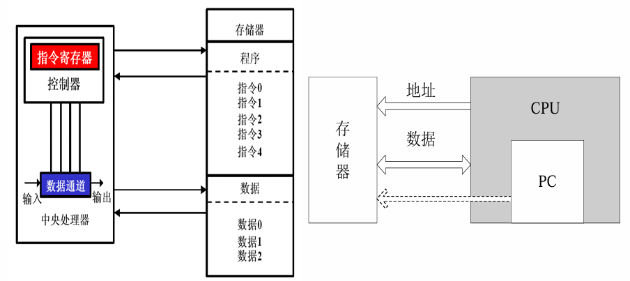
哈佛体系结构
专门设置两个独立存储器：一个存指令（程序存储器），一个存数据（数据存储器），还有两套独立的总线，CPU 可同时读指令和读数据。
- 并行访问，无总线冲突，难写自修改程序
- ARM 9使用哈佛体系结构
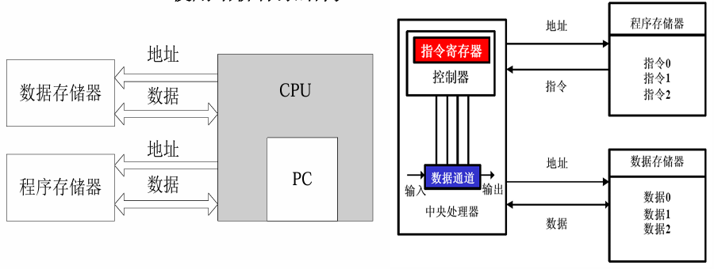
ARM微处理器的特点
ARM 微处理器的特点均围绕 “RISC（精简指令集）架构” 设计，核心是 “高效、精简、适配嵌入式场景”
- 体积小、低功耗、低成本、高性能
- 支持 Thumb（16 位）/ARM（32 位）双指令集，兼容 8/16 位器件
- 大量使用寄存器，指令执行速度更快
- 大多数数据操作都在寄存器中完成
- 寻址方式灵活简单，执行效率高
- 指令长度固定
ARM体系结构版本
主要是v1~v4
V1 版架构
- 26 位寻址空间（64MB），无乘法指令
- 仅支持基础数据处理、Load/Store 存储指令、子程序调用及 SWI 软件中断，无复杂扩展功能。
V2 版架构
- 新增乘法、乘加指令
- 快速中断模式
- 新增 SWP/SWPB（存储器与寄存器交换）指令；
- 其中，ARM3引入片上Cache
V3 版架构
- 从 26 位升级为 32 位（4GB）
- 新增 CPSR（当前程序状态寄存器）和 SPSR（异常状态保存寄存器）
- 新增 MRS/MSR 指令，用于访问 CPSR/SPSR
- 新增中止、未定义两种异常模式
V4 版架构
- 应用最普遍的 32 位基础架构，奠定双指令集基础
- 双指令集：新增 T 变种，支持 16 位 Thumb 指令集（代码密度提升 30%），兼容 ARM（32 位）/Thumb（16 位）切换
- 符号化 / 非符号化半字、符号化字节的存 / 取指令
- SWI 软件中断功能
- 不再强制兼容 26 位地址空间
总结
| 版本 | 核心里程碑 | 关键功能 | 代表处理器 | 现状 |
|---|---|---|---|---|
| V1 | 原型架构 | 基础数据处理、26 位寻址 | ARM1 | 原型未商用 |
| V2 | 引入 Cache | 乘法指令、快速中断 | ARM2、ARM3 | 已废弃 |
| V3 | 32 位寻址 | CPSR/SPSR、新增异常模式 | ARM6 | 已废弃 |
| V4 | 双指令集 | Thumb 指令集、32 位通用架构 | ARM7、ARM9 | 应用最广 |
| V5 | DSP/Java 优化 | Jazelle、增强 DSP 指令 | ARM10、Xscale | 广泛应用 |
| V6 | 多媒体加速 | SIMD、媒体扩展 | ARM11 | 消费电子主力 |
| V7 | Thumb-2/NEON | 混合指令集、多媒体性能飞跃 | Cortex-A/R/M | 32 位主流 |
| V8 | 64 位支持 | AArch64、A64 指令集 | Cortex-A53/A57 | 高端场景主流 |
Thumb-2 指令集
- V7 版架构开始
Thumb-2 不是 “替换” 传统 Thumb，而是 “扩充和优化”，核心是 “混合 16 位 + 32 位指令，无需状态切换”：
| 升级方向 | 具体动作 | 解决的问题 | 实际价值 |
|---|---|---|---|
| 1. 保留并优化 16 位 Thumb 指令 | 新增部分 16 位指令，专门优化程序执行流程（如分支、跳转、条件判断） | 传统 Thumb 执行流程类指令效率低的问题 | 基础流程类代码仍保持高代码密度，不额外占用空间 |
| 2. 新增 32 位 Thumb 指令 | 补充能实现 ARM 指令专有功能的 32 位指令（如访问协处理器、执行特权指令、操作特殊功能寄存器） | 传统 Thumb 无法处理复杂硬件控制、特权操作的局限 | 复杂功能无需切回 ARM 状态，直接用 Thumb-2 的 32 位指令完成 |
| 3. 指令集融合设计 | 16 位和 32 位指令统一在 Thumb-2 框架下，CPU 可自动识别执行，无需手动切换 ARM/Thumb 状态 | 频繁状态切换的性能损耗问题 | 彻底消除切换成本，代码密度和性能同时提升 |
- 代码密度不打折；执行性能显著提升；功能完整性
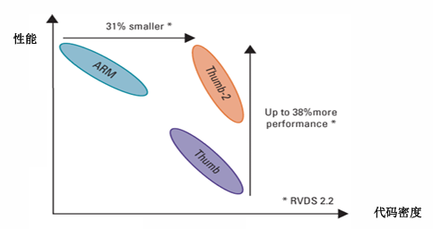
ARM指令集（A32/T32/A64）
[!tip]
- AArch32：不是指令集，而是 ARMv8 架构中 “兼容 32 位指令集的执行环境”，A32 和 T32 都运行在这个环境下；
- AArch64：ARMv8 架构中 “64 位指令集的执行环境”，仅运行 A64 指令集；
- 核心关系：ARMv8 架构同时支持 AArch32（跑 A32/T32）和 AArch64（跑 A64），兼顾 32 位兼容和 64 位升级。
| 对比维度 | A32（ARM） | T32（Thumb） | A64 |
|---|---|---|---|
| 位宽 / 长度 | 32 位固定 | 初期 16 位固定，Thumb-2 后 16+32 位混合 | 64 位固定 |
| 执行环境 | AArch32（ARMv8）/32 位架构 | AArch32（ARMv8）/32 位架构 | AArch64（仅 ARMv8 及以上） |
| 核心优势 | 执行效率最高、功能最完整 | 代码密度高（Thumb-2 兼顾性能） | 64 位寻址、高性能并行运算 |
| 核心局限 | 代码体积大 | 传统版本功能 / 性能受限 | 不兼容 32 位（需切换执行环境） |
| 典型架构 | ARMv3-Armv7（核心）、ARMv8（AArch32） | ARMv4-Armv7（核心）、ARMv8（AArch32） | ARMv8 及以上（AArch64） |
IP 核、软核、硬核、固核
IP（Intellectual Property）核是具备特定功能、可复用的 “预制电路模块”，就像芯片设计中的 “标准化零件”
IP核模块有行为（Behavior）、结构（Structure）和物理（Physical）三级不同程度的设计，对应描述功能行为的不同分 为三类，即软核（Soft IP Core）、完成结构描述的固核 （Firm IP Core）和基于物理描述并经过工艺验证的硬核（Hard IP Core）
| 对比维度 | 软核（Soft IP Core） | 固核（Firm IP Core） | 硬核（Hard IP Core） |
|---|---|---|---|
| 交付形式 | HDL 文本（Verilog/VHDL） | 门级网表 | 物理版图 + 工艺文件 |
| 设计深度 | RTL 级（仅功能描述） | 门级（逻辑结构确定） | 物理级（布局布线确定） |
| 灵活性 | 极高（可修改逻辑、多工艺适配） | 中等（不可改逻辑，可适配工艺） | 极低（不可修改，固定工艺） |
| 后续工作量 | 大（需门级综合 + 物理实现） | 中等（仅需物理实现） | 小（直接集成量产） |
| 性能确定性 | 低（需自行验证时序 / 功耗） | 中（已做时序仿真） | 高（经过工艺验证） |
| 典型场景 | 定制化芯片、多工艺适配 | 中端芯片、平衡灵活与效率 | 量产芯片、高速 / 成熟模块 |
专有名词
ARM（Advanced RISC Machines）：先进精简指令集计算机
MMU：Memory Management Unit，内存管理单元
MPU：Memory Protection Unit，内存保护单元
TCM ：Tightly Coupled Memory，紧耦合内存
TCM 与 Cache 的核心区别
| 对比维度 | TCM（紧耦合内存） | Cache（高速缓存） | | ---------- | ----------------------------------- | ---------------------------------- | | 访问确定性 | 100% 无延迟（固定物理地址直接访问） | 不确定（命中则快，缺失需访问内存） | | 地址特性 | 有明确物理地址 | 无固定地址（动态缓存内存数据） | | 硬件资源 | 占用少（仅需专用 BUS + 存储单元） | 占用多（需缓存控制器 + 替换算法） | | 用途 | 存储实时关键数据（中断向量表） | 临时缓存高频访问的普通数据 |
ARM微处理器结构
ARM 微处理器的结构核心是RISC（精简指令集）架构，核心逻辑是 “精简指令、优化执行效率”
- CISC（复杂指令集）：追求 “单条指令完成复杂操作”，不断新增专用复杂指令
- RISC（精简指令集）：仅保留 20% 高频使用的基础指令，通过简单指令组合实现复杂功能
- 单周期指令执行；Load/Store 专属数据传输；硬布线逻辑实现；精简指令与寻址方式；指令格式固定；优化编译支持
| 对比维度 | RISC（精简指令集） | CISC（复杂指令集） |
|---|---|---|
| 指令集设计 | 指令数量少、功能基础，通过组合实现复杂操作；指令长度固定 | 指令数量多、功能复杂（单指令完成多步操作）；指令长度不固定 |
| 执行效率 | 单指令执行快（1 个机器周期），整体吞吐率高 | 复杂指令执行慢（多个机器周期），指令执行效率不均衡 |
| 流水线支持 | 指令格式统一，流水线每周期可推进 1 步，并行性好 | 指令格式多变，流水线易阻塞，并行优化难度大 |
| 寄存器配置 | 更多通用寄存器（如 ARM 有 31 个通用寄存器），减少内存访问 | 专用寄存器多，通用寄存器少，频繁依赖内存数据 |
| 数据处理方式 | 仅 Load/Store 指令操作内存，其余运算在寄存器内完成 | 指令可直接处理内存数据，无需依赖寄存器中转 |
| 芯片复杂度 | 电路设计简单，芯片面积小、功耗低 | 电路设计复杂，芯片面积大、功耗高 |
流水线
流水线技术是嵌入式处理器（尤其是 RISC 架构 ARM）提升性能的核心技术，核心是 “指令重叠执行”，通过时间复用硬件资源提高系统吞吐率
- 本质是准并行处理技术：程序执行时，多条指令的不同步骤 “重叠进行”
- 核心是时间重叠：在顺序指令流中，让完成一条指令的各个硬件部件在时间上交替工作，同时服务于不同指令；
- 关键是资源独立：每条指令的不同步骤必须使用完全不同的硬件资源
[!tip]
- 尽早启动原则：前一个任务的某一步骤结束后，下一个任务立即启动该步骤，不浪费硬件空闲时间；
- 资源独占性：多个任务同时执行，但必须使用不同的硬件资源，避免冲突；
- 不提升单个任务效率：流水线不缩短单个任务的执行时间，只提升系统吞吐率；
- 瓶颈决定效率：流水线的整体速度由 “最慢的步骤” 决定
ARM 3 级流水线（取指 - 译码 - 执行）
ARM7 采用的3 级流水线是 RISC 架构提升吞吐率的核心设计，核心是 “让 3 条指令的不同阶段重叠执行”
- 取指（Fetch）：从存储器中读出指令，存入指令寄存器；
- 译码（Decode）：解析指令的操作码、确定操作数来源，为 “执行阶段” 准备控制信号；
- 执行（Execute）：完成指令的运算 / 操作，并将结果写回寄存器；
对于单周期指令单条指令需要 3 个周期完成，但每 1 个时钟周期就能完成 1 条指令即吞吐率为每个周期一条指令
但是多周期指令会出现流水线阻塞
- 下图中STR 指令的 “执行阶段” 需要 2 个周期（地址计算 + 数据传送）
- STR 的 “地址计算” 和 “数据传送” 都需要使用存储器（地址计算要读内存地址，数据传送要写内存），而译码和执行阶段也需要访问存储器—— 存储器是 “不可同时共享的资源”，因此 STR 执行时，后续指令的 “译码和执行" 操作无法进行，导致流水线暂停。
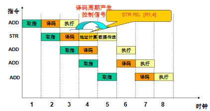
ARM的5级流水线
ARM9 是5 级流水线（取指→译码→执行→缓存→写回）
- 增加了I-Cache和D-Cache，把存储器的取指与数据存取分开
- 增加了数据写回的专门通路和寄存器
- 其中将原本三段流水的读寄存器从“执行”阶段移动到译码阶段，同时将写回作为一个独立的阶段，并且在执行和写回直接加入访存阶段专门用于Load或Store
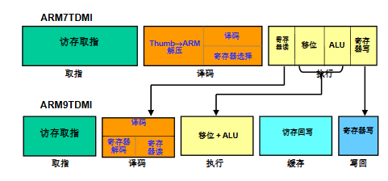
ARM流水线的设计问题
ARM7 的 3 级流水线（取指→译码→执行）容易 “阻塞 / 间断”，比如多周期指令（如 STR）会抢存储器资源，导致后续指令没法取指 —— 这会让流水线 “卡壳”，降低每时钟周期完成的指令数（即吞吐量）。
解决方法：缩短程序执行时间、解决流水线相关问题
缩短程序执行时间
程序执行时间的公式是：时间 = 指令数 × CPI（每条指令平均周期数） ÷ 时钟频率
- 提高时钟频率（fclk）：把流水线拆成更多级（比如 3 级→5 级），让每一级的逻辑更简单，将每一级的处理时间变短，就能把时钟频率调得更高
- 降低 CPI（每条指令的平均周期数）：降低 CPI，就得减少流水线阻塞则需要解决流水线的 “相关问题”
解决流水线的 3 类 “相关问题”
结构冒险：多条指令抢同一个硬件
- 指令 Cache 和数据 Cache 分开
- 给 ALU 加单独的加法器，专门算内存地址
数据冒险：一条指令需要前一条的结果，但前一条还没执行完
- 旁路技术（转发）
- 流水线互锁（冒泡）
控制冒险：遇到B（跳转）指令，PC 跳转到新地址，流水线里已经取好的指令就没用了
- 延时分支（延迟槽）
- 提前算分支地址
- 分支预测
超标量执行
一个时钟周期同时执行多条指令（比如 Cortex-A 系列），方法是装多套执行部件（多个 ALU、移位器）。
- 超标量处理机必须有两条或两条以上能够同时工作的指令流水线
- 动态地检查指令相关性
- 有分支指令,必须将分支被执行和分支不被执行这两种情况分开考虑
ARM微处理器的寄存器结构
ARM 寄存器结构的核心是 “分组管理 + 模式专属”——37 个寄存器按功能和处理器模式划分，既保证模式切换时的状态隔离，又通过共用寄存器减少硬件开销
寄存器整体分类（37 个，均为 32 位）
- 通用寄存器（31 个）：存储数据、地址或指令地址，包含程序计数器（PC，R15），是指令执行的核心数据载体。
- 状态寄存器（6 个）：记录 CPU 的工作状态（如执行模式、中断禁止状态）和程序运行状态（如运算结果的正负、零标志）
ARM 的 7 种处理器模式（用户、系统、管理、中止、未定义、外部中断、快速中断）对应不同的寄存器组（BANK）
- 可访问寄存器数量固定：任意模式下，都能直接访问 15 个通用寄存器（R0~R14）、1~2 个状态寄存器和 PC（R15），共 17~18 个寄存器
- 寄存器分 “共用” 和 “专属”：部分寄存器（如 R8~R14 的部分分组、SPSR）是特定模式专属
ARM微处理器的工作状态
ARM 处理器的两种工作状态（ARM/Thumb） 以及状态切换规则，这是 ARM 架构适配嵌入式场景 “性能 + 存储” 平衡的关键设计
两种工作状态：
| 工作状态 | 执行指令集 | 指令长度 | 核心特点 | 适用场景 |
|---|---|---|---|---|
| ARM 状态 | 32 位 ARM 指令集 | 32 位（4 字节） | 指令功能完整（支持所有 ARM 操作）、执行效率高 | 复杂运算（如乘法、中断处理）、需要全功能指令的场景 |
| Thumb 状态 | 16 位 Thumb 指令集 | 16 位（2 字节） | 指令是 ARM 的功能子集（无部分复杂指令）、存储开销小（省 50% 空间） | 简单控制逻辑（如循环、条件判断）、存储资源紧张的场景 |
[!tip]
ARM 处理器总是从 ARM 状态启动（上电 / 复位后默认 ARM 状态），运行过程中可通过指令或异常处理切换，具体规则如下：其中异常处理总是从当前状态切换为
ARM状态执行异常服务程序
- 进入 Thumb 状态（从 ARM→Thumb）
有两种触发方式，核心是
BX指令：方式 1：执行 BX 指令（主动切换）
- 条件：操作数寄存器的最低位（位 [0]）= 1；
- 举例：
MOV R0, #0x123 ; 让R0的位[0]=1（0x123是奇数）→BX R0；- 效果：处理器立即切换到 Thumb 状态，开始执行 16 位 Thumb 指令。
方式 2：异常处理返回（被动切换）
- 场景：处理器原本在 Thumb 状态，触发了异常
逻辑：异常处理时会先切回 ARM 状态执行异常服务程序，异常处理完成返回时，自动切回 Thumb 状态。
进入 ARM 状态（从 Thumb→ARM）
同样有两种方式，核心也是
BX指令：方式 1：执行 BX 指令（主动切换）
- 条件：操作数寄存器的最低位（位 [0]）= 0；
- 举例：
MOV R0, #0x122 ; 让R0的位[0]=0（0x122是偶数）→BX R0；- 效果：处理器立即切换到 ARM 状态，开始执行 32 位 ARM 指令。
方式 2：触发异常处理（被动切换）
- 场景：无论处理器当前是 ARM 还是 Thumb 状态，只要触发异常；
- 逻辑：异常发生时，处理器会自动切换到 ARM 状态，把 PC 指针存入异常模式的链接寄存器（LR），并从异常向量地址（如 0x00000008）开始执行 ARM 指令的异常服务程序。
ARM体系结构的存储器格式
ARM 体系结构的存储器格式核心围绕 “4GB 寻址空间 + 字节存储单位 + 字组织方式 + 两种端模式” 展开，核心是解决 “多字节数据（字 / 半字）在内存中的排列顺序” 问题
- 存储空间：
- 地址线共 32 条，寻址空间为
2^32字节，即 4GB（0x00000000~0xFFFFFFFF）。 - 地址按字节递增排列，每个字节对应唯一的 32 位地址（如 0x00000000、0x00000001 等）。
- 地址线共 32 条，寻址空间为
- 存储单位与组织
- 基本单位：字节（8 位），是存储器读写的最小单位。
- 存储组织：字（32 位），由连续 4 个字节组成（地址为 A、A+1、A+2、A+3），且字的起始地址必须是 4 的倍数（如 0x00000000、0x00000004），这是 ARM 指令对齐的基本要求。
大端模式（Big-Endian）
- 高字节数据存放在低地址，低字节数据存放在高地址（“高位在前，低位在后”）。
- 若要存储 32 位数据 0x12345678（B3=0x12、B2=0x34、B3=0x56、B0=0x78）
- 地址 A：存储 0x12（B3）
- 地址 A+1：存储 0x34（B2）
- 地址 A+2：存储 0x56（B1）
- 地址 A+3：存储 0x78（B0）
小端模式（Little-Endian）
- 低字节数据存放在低地址，高字节数据存放在高地址（“低位在前，高位在后”），是 ARM 处理器最常用的模式。
- 存储 32 位数据 0x12345678（B3=0x12、B2=0x34、B3=0x56、B0=0x78）：
- 地址 A：存储 0x78（B0）
- 地址 A+1：存储 0x56（B1）
- 地址 A+2：存储 0x34（B2）
- 地址 A+3：存储 0x12（B3）
指令长度及数据类型
ARM处理器指令长度是32位（ARM状态）和16位（Thumb状态）。
ARM 支持 3 类、6 种存储数据类型，核心是 “字节 / 半字 / 字”，每种都有对齐要求：
| 数据类型 | 位数 | 有 / 无符号 | 对齐要求（地址必须是它的倍数） |
|---|---|---|---|
| 字节 | 8 位 | 有 / 无符号 | 无强制对齐（但实际按 1 字节对齐） |
| 半字 | 16 位 | 有 / 无符号 | 必须按 2 字节对齐（地址是 2 的倍数，如 0x00000002） |
| 字 | 32 位 | 有 / 无符号 | 必须按 4 字节对齐（地址是 4 的倍数，如 0x00000004） |
ARM 的指令长度和状态有关，必须严格对齐，否则会触发异常：
- “数据对齐” 是指访问数据的地址必须是数据长度的整数倍
- ARM 状态（32 位指令）：指令是 “字”，必须按 4 字节对齐（地址是 4 的倍数）；Thumb 状态（16 位指令）：指令是 “半字”，必须按 2 字节对齐（地址是 2 的倍数）。
存储管理单元（MMU）
MMU用于在CPU和物理内存之间进行地址转换；也就是内存映射
内存映射：将地址从逻辑空间映射到物理空间的过程
- 将虚地址转换成物理地址。
- 控制内存的访问权限
MMU关闭时，虚地址直接输出到物理地址总线。
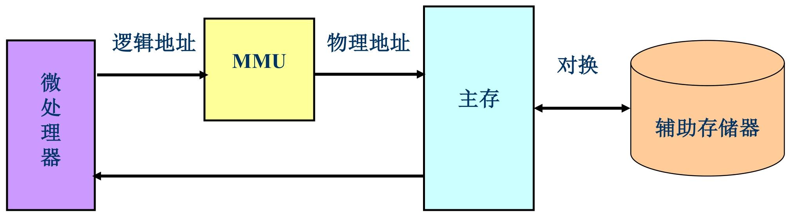
MMU的页式存储管理
MMU 页式存储管理，核心是 “把虚拟 / 物理内存切成等大的‘页’，用页表做地址映射，再用 TLB 加速查询”
| 术语 | 通俗解释 | ARM920T 关键参数 |
|---|---|---|
| 虚拟页 | 虚拟地址空间被切分的固定大小块（程序 “看到” 的内存块） | 支持 4 种大小：1MB/64KB/4KB/1KB |
| 物理页（页帧） | 物理内存被切分的固定大小块（实际的内存硬件块），大小和虚拟页完全一致 | 与虚拟页一一对应（如 4KB 虚拟页对应 4KB 物理页） |
| 页表 | 存放在物理内存中的 “映射字典”，每个 “页表项” 对应 1 个虚拟页，记录映射关系 | 分一级 / 二级页表，一级页表基地址存在 CP15-C2 寄存器 |
| 页表项 | 页表的最小单位，核心内容：虚拟页→物理页的地址映射、访问权限、Cache 特性 | 32 位大小，包含地址位、权限位、C/B 位（Cache / 写缓冲） |
| TLB（快表） | 缓存 “最近用的页表项” 的高速硬件，解决页表查询慢的问题 | 容量 8~16 字，访问速度≈CPU 通用寄存器 |
- 在ARM系统中，使用协处理器CP15的寄存器C2来保存一级页表的基地址。
[!tip]
页式存储管理的工作流程
- 地址切分 —— 虚拟地址拆成 “页号 + 页内偏移”
- 查 TLB—— 先找高速缓存的页表项
- 查页表 —— 从内存找映射关系
- 权限 / 缓冲检查 —— 最后一道安全关卡
- 访问物理内存 —— 完成最终读写
协处理器 CP15
协处理器 CP15 是 ARM 架构中专门负责系统级配置与管理的硬件模块，相当于处理器的 “控制面板”—— 所有和 MMU、Cache、内存权限相关的核心参数，都通过 CP15 的寄存器来设置。
| 寄存器 | 核心作用（考点） | 典型操作 |
|---|---|---|
| C1（控制寄存器） | 1. 使能 / 禁止 MMU（位 [0]：置 1 启用 MMU，置 0 进入平板模式）；2. 开关 Cache（位 [2]/ 位 [3]）；3. 开关写缓冲器（位 [4]） | 启用 MMU：MCR p15, 0, R0, c1, c0, 0（R0 的位 [0] 置 1） |
| C2（页表基地址寄存器） | 保存一级页表的物理基地址（MMU 查页表的起点），必须是 16KB 对齐（因为一级页表占 16KB） | 设置页表地址：MCR p15, 0, R0, c2, c0, 0（R0 存一级页表物理地址） |
| C3（域访问控制寄存器） | 将内存划分为 16 个 “域”，每个域用 2 位设置权限（如 “无访问 / 客户级 / 管理级”），实现内存区域的分组管控 | 设置域权限：MCR p15, 0, R0, c3, c0, 0（R0 的每 2 位对应一个域的权限） |
| C5（失效状态寄存器） | 指示内存访问失效的原因（如 “权限违规”“地址未对齐”），用于异常处理时定位问题 | 读取失效原因：MRC p15, 0, R0, c5, c0, 0 |
| C6（失效地址寄存器） | 保存 “触发内存访问失效的虚拟地址”，帮助定位是哪个地址违规访问 | 读取失效地址：MRC p15, 0, R0, c6, c0, 0 |
| C8（TLB 操作寄存器） | 控制 TLB 的清空（如清空所有 TLB 项、清空指定虚拟地址的 TLB 项），进程切换时必须清空 TLB | 清空所有 TLB：MCR p15, 0, R0, c8, c7, 0 |
| C10（TLB 锁定寄存器） | 锁定 TLB 中的部分项（防止被替换），用于加速高频访问的页表项（如内核页表） | 锁定 TLB 项：MCR p15, 0, R0, c10, c0, 0 |
使能/禁止MMU
协处理器CP15的寄存器C1的位[0]用于设置禁止/使能MMU。C1位[0]=0时，禁止MMU；C1[0]=1时，使能MMU
MRC P15, 0, R0, C1, 0, 0 #读取CP15的C1寄存器值到R0
ORR R0, #0x1 #ORR是按位或指令
MCR P15, 0, R0, C1, 0, 0 #R0写回CP15的C1寄存器
使能 MMU 后，内存访问的完整流程:
- 查 TLB（快表）:在高速缓存 TLB 中找当前虚拟地址的映射关系
- 查页表：MMU 到物理内存中找页表（一级→二级）
- 更新 TLB：把查到的页表项存入 TLB（如果 TLB 已满，会按 “淘汰算法” 替换掉最不常用的项）
禁止MMU时，存储器按如下处理：
- Cache / 写缓冲可选：根据具体情况，确定是否允许cache和写缓冲器。
- 权限 / 异常失效
- 地址直接映射：虚地址就是物理地址，此时使用平板存储模式。
MMU 地址变换过程
核心是 “按内存块大小分级映射”—— 以 “段 / 大页 / 小页 / 极小页” 为单位，通过一级 / 两级页表完成虚拟地址到物理地址的转换
| 存储块类型 | 大小 | 页表层级 | 核心特点 |
|---|---|---|---|
| 段（Section） | 1MB | 仅一级页表 | 最快（少一级查表），适合大块内存映射 |
| 大页（Large Page） | 64KB | 一级 + 二级页表（粗页） | 中等粒度，兼顾灵活与效率 |
| 小页（Small Page） | 4KB | 一级 + 二级页表（粗 / 细页） | 细粒度，适合碎片化内存 |
| 极小页（Tiny Page） | 1KB | 一级 + 二级页表（细页） | 最细粒度，仅细页二级表支持 |
- 一级页表：包含段描述符、粗页描述符、细页描述符。
- 二级页表有粗页、细页2种形式。
- 以段为单位的地址变换只需要一级页表
- 二级页表：包含大页、小页、极小页的描述符。以页为单位的地址变换过程需要二级页表。其中粗页只有大页和小页
一级页表地址变换
一级页表项地址 = CP15-C2高18位 + 虚拟地址高12位 + 00（2位0，字对齐）
= 一级页表基地址（18位）+ 一级页表偏移量（12位）+ 00（字对齐）
首先一级页表需要 4096 个描述符（4K 个）即一级页表偏移量（12位）
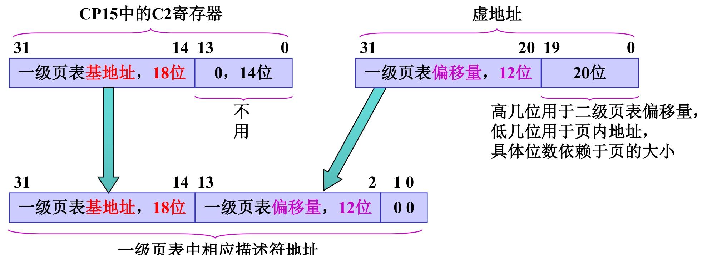
页表和描述符
- 页表：一段连续的物理内存，里面按顺序存放若干个 32 位的 “描述符”（每个描述符占 1 个字），是 MMU 做地址转换的 “字典”；
- 描述符：页表中的最小单元（32 位），每个描述符对应一段虚拟地址，包含 “物理地址基址、类型标识、访问权限、缓存特性” 四大核心信息，是地址转换的 “最小依据”；
- 层级逻辑：一级页表是 “总字典”（管 1MB 粒度），二级页表是 “子字典”（管 64KB/4KB/1KB 粒度），描述符是字典里的 “词条”。
一级页表：
- 段描述符：直接映射 1MB，无需二级页表（最快）；
- 粗页 / 细页描述符：不直接映射物理地址，只告诉 MMU “二级页表的位置”，需继续查二级页表（更灵活）；
- 所有一级描述符的核心识别标志是bit1~bit0：00 = 无效、01 = 粗页、10 = 段、11 = 细页。
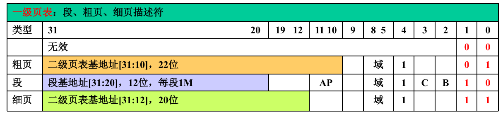
二级页表
- 所有二级描述符的核心识别标志也是bit1~bit0：00 = 无效、01 = 大页、10 = 小页、11 = 极小页（仅细页）；
- 基地址的 “对齐要求”：大页 64KB（低 16 位 0）、小页 4KB（低 12 位 0）、极小页 1KB（低 10 位 0），错一位就会映射错误。
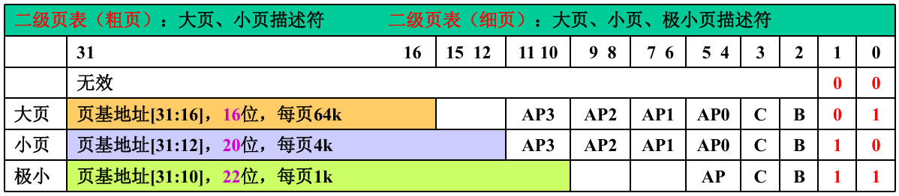
段地址变换
- 段地址变换是 ARM MMU 中最简单、最快的地址转换方式（仅需一级页表，无需二级页表）
- 核心是 “用 12 位段基地址 + 20 位段内偏移” 拼接物理地址；
- 12 位 = 2¹²，对应 4096 个 1MB 物理段（4096×1MB=4GB），刚好覆盖 32 位物理地址空间；
- 确定一级页表基地址（从 CP15-C2 寄存器读取）；计算一级页表偏移量（从虚拟地址提取）
- 计算段描述符的物理地址（一级页表项地址）
段描述符地址 = 一级页表基地址（C2高18位） + 一级页表偏移量（12位）<<2 + 00（2位0，字对齐）
- 读取段描述符，提取核心信息（段基地址+属性校验）
- 提取段内地址，拼接最终物理地址
物理地址 = 段基地址（12位，bit31~20） + 段内地址（20位，bit19~0）
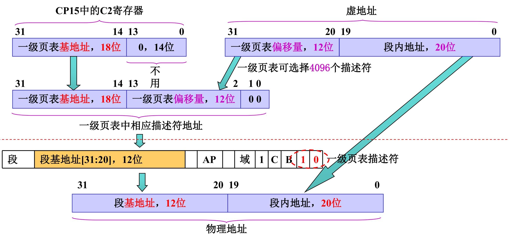
粗页二级页表地址变换
大页64K
通过一级页表找到 22 位粗页二级页表基地址，再用虚拟地址中间 8 位定位 64KB 大页描述符，最终拼接 “16 位物理页基地址 + 16 位页内偏移”得到物理地址
- 计算一级页表中 “粗页描述符” 的地址，然后读取一级页表 “粗页描述符”，提取粗页二级页表基地址和属性校验
- 计算二级页表 “64KB 大页描述符” 的地址，读取二级页表 “64KB 大页描述符”，得到64KB 大页物理基地址和属性校验
二级页表项地址 = 粗页二级页表基地址（描述符[31:10]） + 二级页表偏移量（虚拟地址[19:12]）<<2 + 00（bit1~0）
- 提取虚拟地址中的 “页内偏移”;拼接最终物理地址
物理地址 = 64KB大页物理基地址（描述符[31:16]） + 页内偏移（虚拟地址[15:0]）
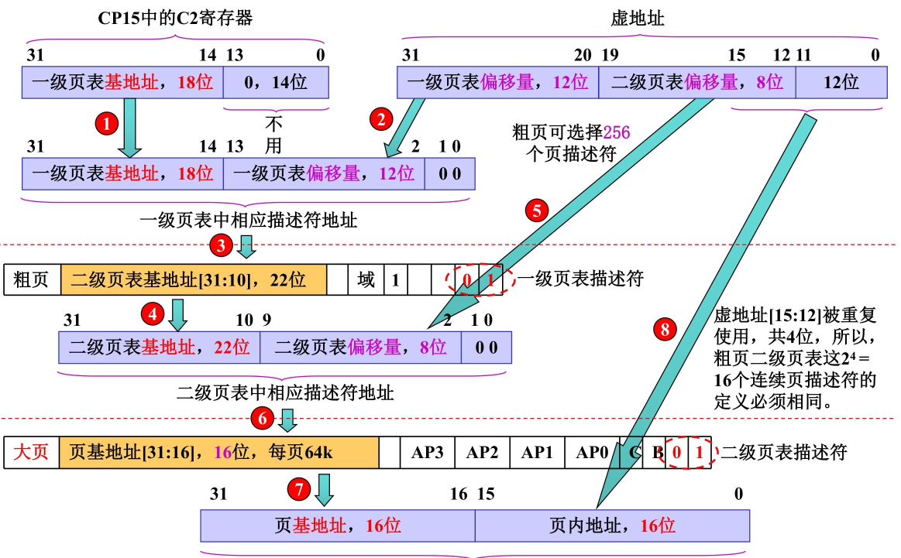
小页4K
不同于大页的基地址，小页4K的基地址有20位
同时256 个描述符 × 4KB（小页）= 1024KB = 1MB，刚好 “填满” 一级粗页项覆盖的 1MB 虚拟地址；
所以小页的物理地址：
物理地址 = 小页物理基地址（描述符[31:12]） + 页内偏移（虚拟地址[11:0]）
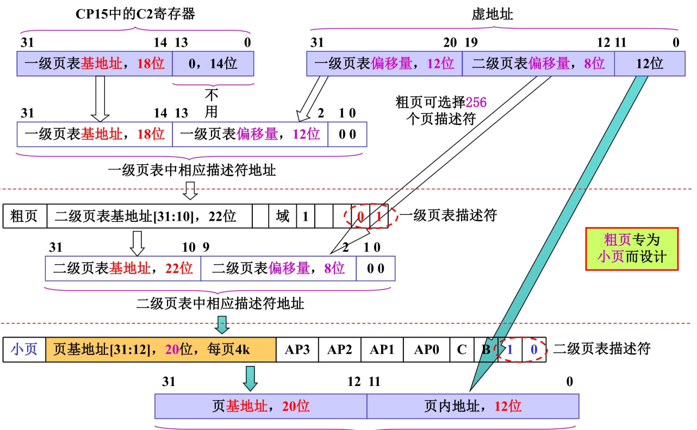
细页二级页表地址变换
大页64K
- 其中一级页表地址计算和上述一致
- 读取一级 “细页描述符”，提取二级页表基地址；计算二级页表中 “64KB 大页描述符” 的地址
二级页表项地址 = 细页二级页表基地址（描述符[31:12]） + 二级偏移量（虚拟地址[19:10]）<<2 + 00（bit1~0）
- 不同于粗页可选择256个页描述符即二级页表偏移量只有
8位，细页可选择1024个页描述符所以偏移量有10位 - 读取二级 “大页描述符”，提取物理页基地址；提取虚拟地址 “页内偏移”
物理地址 = 大页物理基地址（描述符[31:16]） + 页内偏移（虚拟地址[15:0]）
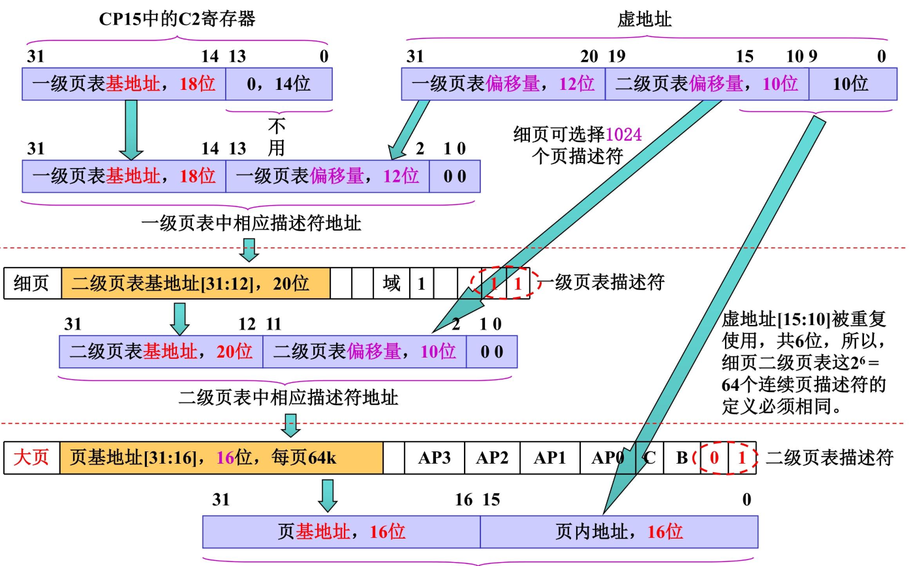
小页4K
不同于大页的地方在于最后物理地址的拼接，仅仅需要虚拟地址的低12位即可
物理地址 = 大页物理基地址（描述符[31:10]） + 页内偏移（虚拟地址[11:0]）

极小页1K
不同于上述两个页表的地方也是物理地址，仅仅仅仅需要虚拟地址的低10位即可
所以不会有连续页表描述符相同，细页专为极小页而设计；1024 个描述符 × 1KB（小页）= 1024KB = 1MB，刚好 “填满” 一级粗页项覆盖的 1MB 虚拟地址；
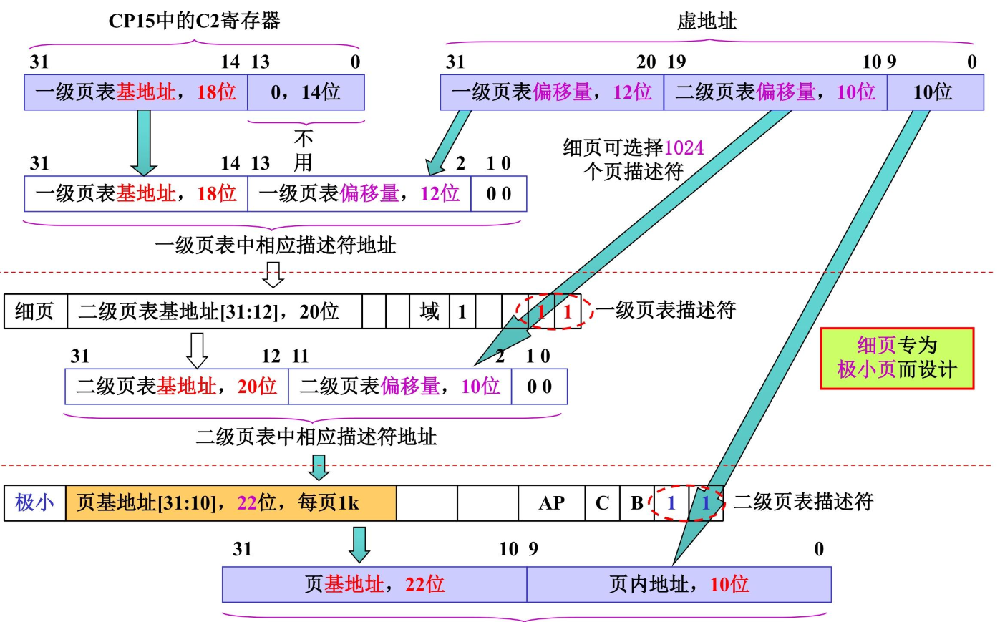
[!note]
MMU 地址变换完整流程：从虚拟地址出发，先通过一级页表判断映射类型，再按 “段 / 粗页 / 细页” 分支完成物理地址拼接
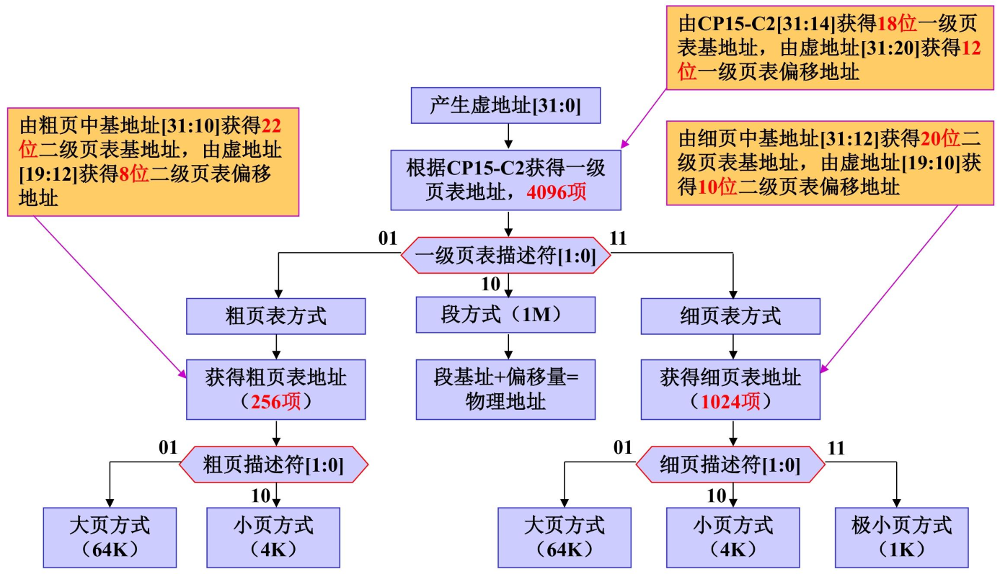
MMU中的存储访问权限
ARM920T MMU 的存储权限控制是 “域（Domain）宏观管控 + AP（访问权限）微观管控” 的双层逻辑
域是 “第一道门禁”（管 1MB/64KB/4KB 块的整体访问级别），AP 是 “第二道门禁”（管块内的读写 / 用户 / 特权权限）；域权限优先于 AP 权限，域禁止则直接故障，域允许才会检查 AP。
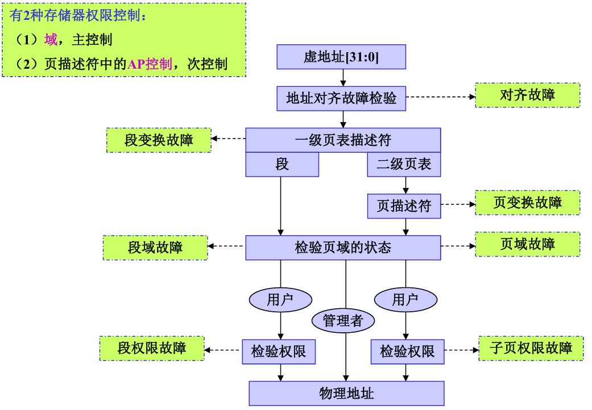
CP15-C1 寄存器 S/R/AP 联合逻辑
通过 3 个比特位的组合，差异化管控特权级（Privileged） 和用户级（User） 对内存的读写权限
| 位段 | 标识 | 全称 / 核心含义 | 作用范围 | 核心特性 |
|---|---|---|---|---|
| AP | 访问权限位 | Access permissions | 全局内存访问 | 权限管控的核心位，与 S/R 配合生效 |
| S | 系统位 | Modify MMU SYSTEM | 特权级权限扩展 | 标记 “系统内存区域”，覆盖 AP 的基础权限 |
| R | ROM 保护位 | ROM Protection status | 只读内存保护 | 标记 “ROM / 只读区域”，限制写操作 |
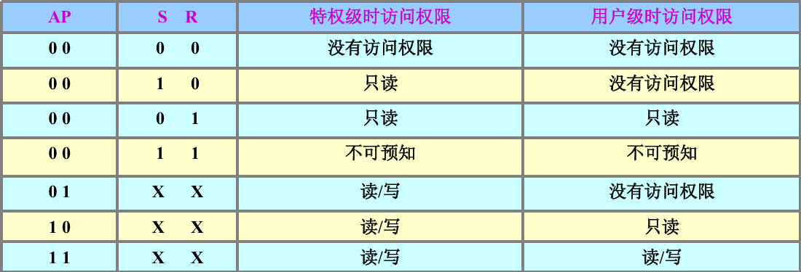
MMU 中的 “域（Domain）”
“域是一些段、大页或者小页的集合” → 本质是内存的 “权限分组标签”：无需给每个段 / 页单独配置 “是否允许访问”，只需给整个域配置规则，批量管控一组内存；
- ARM 920T支持最多16个域，每个域的访问控制特性都是由CP15中的寄存器C3中的两位来控制的。
- CP15中寄存器C3：每两位控制一个域的访问控制特性
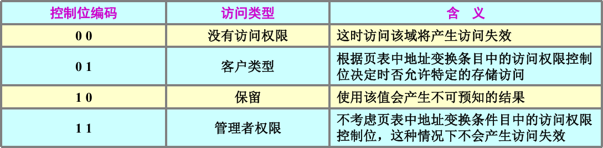
快表TLB操作
TLB（Translation Lookaside Buffer）直译是 “地址变换旁视缓冲器”，核心是把近期高频访问的页表映射项（虚拟地址→物理地址 + 权限 / 属性）缓存到 CPU 内部的高速存储单元，替代每次访问内存查页表的操作
“程序执行具有局部性” 是 TLB 生效的核心前提：
- 时间局部性：程序近期访问过的内存地址，短时间内大概率会再次访问（比如循环变量、常用函数）；
- 空间局部性：程序访问的内存地址，大概率集中在某一连续区域（比如数组、结构体）；
存储访问失效
存储访问失效是 ARM920T MMU 的 “安全防护机制”—— 当 CPU 发起的内存访问违反硬件规则（如地址不对齐、权限不足）时，MMU / 存储系统会主动 “叫停” 这次访问，并触发异常，避免错误的内存操作破坏系统数据或导致硬件异常。
- MMU的存储访问失效有4种类型：地址对齐失效、地址变换失效、域控制失效、访问权限控制失效。
- 当发生存储访问失效时，存储系统可以中止3种存储访问：cache内容预取、非缓冲的存储器访问操作、页表访问。
2 种失效检测机制： “存储访问中止（abort）”—— 这是对所有存储访问失效的统一命名。
| 检测机制 | 负责主体 | 上报方式 | 核心特点 |
|---|---|---|---|
| MMU 失效机制（内部） | MMU | MMU 自己检测到失效后，向 CPU 报告，并把 “失效原因（C5）” 和 “失效地址（C6）” 写入 CP15 寄存器 | 最核心的检测方式，覆盖 90% 以上的失效场景 |
| 外部存储访问中止机制 | 外部存储系统（内存控制器 / 外设） | 外部硬件检测到访问错误（比如访问不存在的物理地址），主动给 CPU 发 “中止信号” | 补充检测，针对 MMU 管不到的外部硬件错误 |
存储访问中止会触发 CPU 的异常（中断），但触发时机分两种，核心取决于 “失效发生在哪个阶段”：
- 如果存储访问发生在数据访问周期，微处理器将产生数据访问中止异常。
- 如果存储访问发生在指令预取周期，当该指令执行时，微处理器将产生指令预取异常。
MMU中与存储访问失效相关的2 个核心寄存器：C5（失效状态）+ C6（失效地址）
ARM的处理器模式
ARM 处理器的 7 种工作模式是其 “权限分级 + 异常处理” 的核心设计，所有模式由当前程序状态寄存器（CPSR）的低 5 位 M [4:0] 唯一标识，不同模式对应不同的权限、硬件资源访问范围
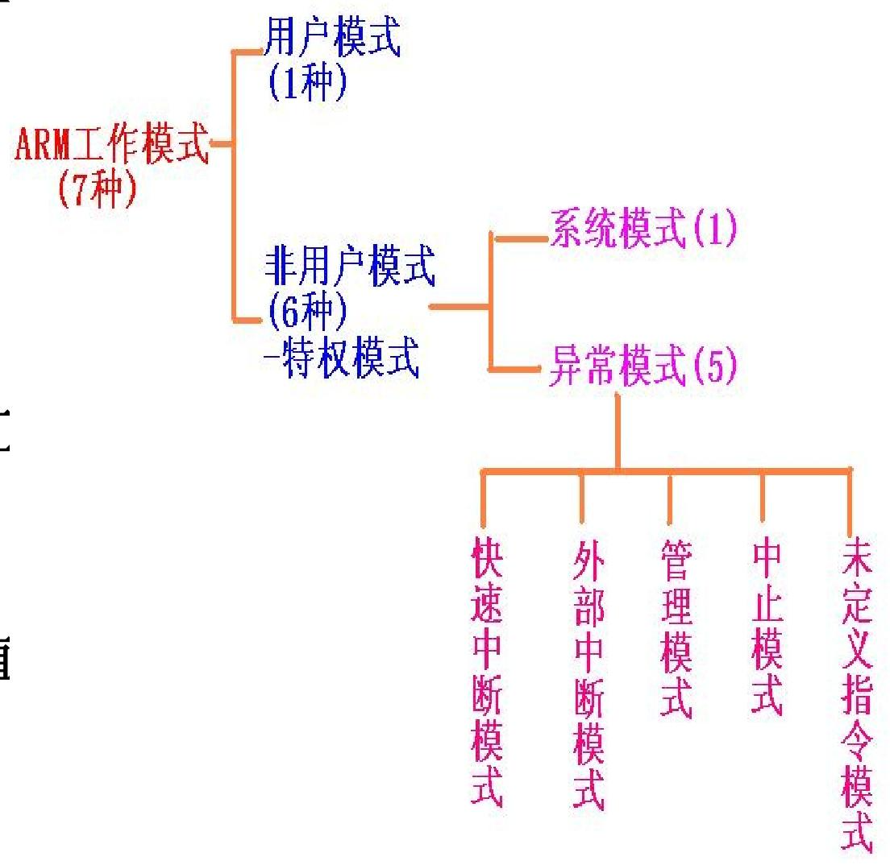
模式切换的两种核心方式：
- 异常触发（自动切换，所有模式通用）：处理器自动改变CPSR中M[4:0]的值，进入相应的工作模式；
- 特权模式下主动修改（手动切换，仅特权模式可用）：用指令向CPSR的M[4:0]字段写入特定的值，进入相应的工作模式。
| 处理器模式 | 简称 | 核心用途 | 关键备注 | M [4:0]（5 位二进制） | 十进制值 |
|---|---|---|---|---|---|
| 用户 | usr | 正常程序执行（如 APP、普通代码） | 唯一非特权模式，不能直接切换到其他模式 | 10000 | 16 |
| 快速中断 | fiq | 高速数据传输、通道处理（如 DMA、高速外设中断） | FIQ 异常触发时自动进入，硬件上有独立寄存器组，响应速度最快 | 10001 | 17 |
| 外部中断 | irq | 通用中断处理（如按键、定时器、普通外设中断） | IRQ 异常触发时自动进入，最常用的中断模式 | 10010 | 18 |
| 管理 | svc | 操作系统内核运行、系统保护 | 复位（开机）、软件中断（SWI 指令）时进入，是系统默认的特权模式 | 10011 | 19 |
| 中止 | abt | 内存访问失效处理（如地址变换失效、权限失效） | ARM7TDMI 中用途有限，ARM9 及以上用于虚拟内存 / 存储保护 | 10111 | 23 |
| 未定义 | und | 未定义指令、硬件协处理器仿真处理 | 执行非法指令 / 未实现指令时自动进入，用于软件模拟硬件功能 | 11011 | 27 |
| 系统 | sys | 操作系统特权任务运行 | 与用户模式功能几乎一致，但拥有特权（可直接切换模式），专为内核特权任务设计 | 11111 | 31 |
除用户模式外，其余 6 种均为特权模式
处理器启动时的模式转换流程：
- 复位后默认模式：开机复位瞬间，硬件自动将 CPU 切换到管理模式（svc）（M[4:0]=10011）；
- 初始化阶段：在 svc 模式下完成核心初始化：初始化堆栈，配置MMU、Cache、中断控制器等核心硬件（禁止切换到用户模式）
- 内核通过指令主动修改 CPSR 的 M [4:0] 为 10000，切换到用户模式，运行普通应用程序；
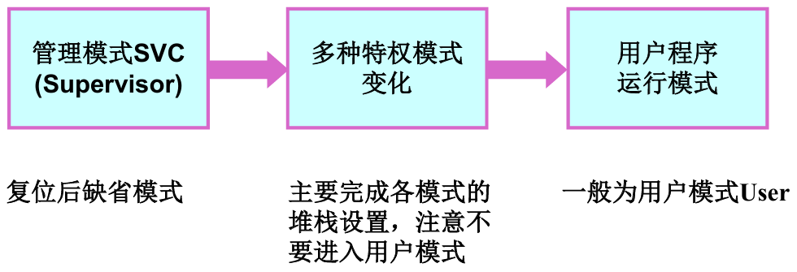
ARM 处理器寄存器组织
ARM 处理器的 37 个32位寄存器（31 个通用 + 6 个状态）是其核心硬件资源
设计的核心逻辑是 “按工作模式分组、重叠复用 + 模式专属”
| 寄存器类型 | 数量 | 核心包含 / 作用 |
|---|---|---|
| 通用寄存器 | 31 个 | 包含程序计数器（PC）（本质是 R15）+ 普通通用寄存器（R0~R14）；用于存放数据、地址、指令地址，是程序运行的 “临时存储区” |
| 状态寄存器 | 6 个 | 核心是当前程序状态寄存器（CPSR） + 5 个保存程序状态寄存器（SPSR）（fiq/irq/svc/abt/und 模式各 1 个）；用于记录 CPU 状态、模式、标志位、权限等 |
PC（R15）虽然归为 “通用寄存器”，但功能唯一
ARM 不会为 7 种模式各做一套完整的 37 个寄存器（硬件成本太高），而是采用 “重叠复用 + 模式专属” 的分组策略：
- 全局共享寄存器：所有模式都能访问的寄存器（比如 R0~R7）
- 模式重叠寄存器：不同模式共享寄存器编号，但物理上是不同的寄存器
- 模式专属寄存器：仅某一种模式能访问的寄存器，相当于 “专属储物间”。
ARM状态各模式下可以访问的寄存器
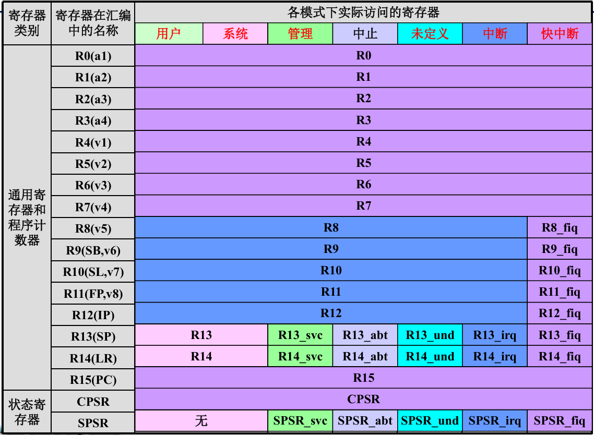
- 在汇编中，
R0~R13为保存数据或者地址的通用寄存器，可用于任何使用通用寄存器的指令 - 其中
R0～R7为未分组的寄存器，对于任何处理器模式，R0～R7都对应于相同的32位物理寄存器。 - 寄存器
R8～R14为分组寄存器，其对应的物理寄存器取决于当前处理器模式 - 寄存器
R8～R12有两个分组的物 理寄存器。一个用于除FIQ模式 之外的所有寄存器模式，另一个 用于FIQ模式。 - 寄存器
R13、R14分别有6个分组的物 理寄存器。一个用于用户和系统模 式，其余5个分别用于5种异常模式 - 寄存器R13常作为堆栈指针（SP）。在ARM指令 当中，没有以特殊方式使用R13的指令或其它功能， 只是习惯上都这样使用。但是在Thumb指令集中有必须使用R13的指令
- R14为链接寄存器（LR），在结构上有两个特殊功能：在每种模式下，模式自身的R14用于保存子程序返回地址；当发生异常时，将异常模式对应的R14设置为异常返回地址（有些异常有一个小的固定偏移量）
- 寄存器R15为程序计数器（PC），它指向正在取指的地址。R15值的改变将引起程序执行顺序的改变
- 所有模式都可以访问当前程序状态寄存器CPSR。
- 每种异常都有自己的保存程序状态寄存器SPSR。
R14（LR 链接寄存器）
“程序 A 调用程序 B” 场景：
程序A执行 → 执行BL Lable（调用程序B） → 硬件自动把“BL下一条指令的地址”存入LR → 跳转到程序B执行 → 程序B最后把LR的值写入PC → 回到程序A的断点继续执行
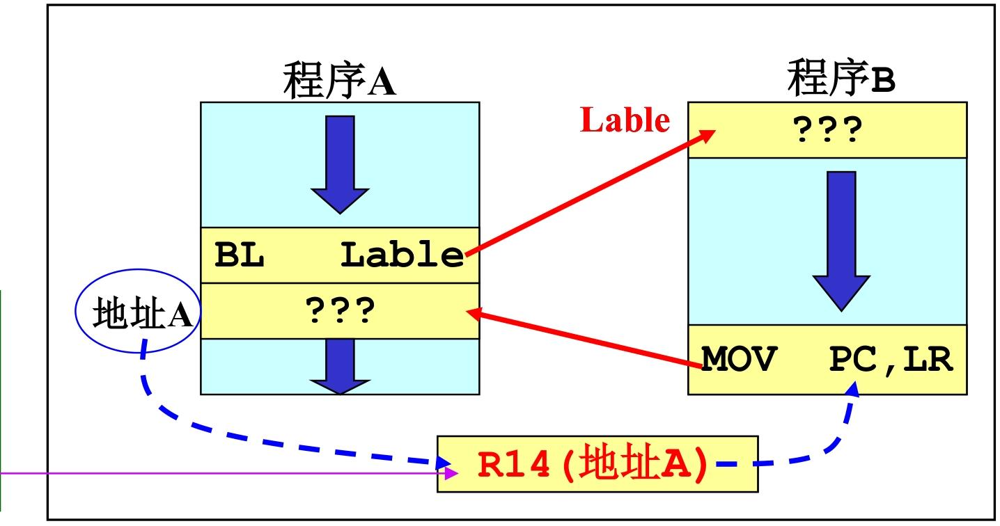
保存的是 “下一条指令地址”，而非当前 PC
LR 在异常处理中的作用：和子程序调用 “类似但有差异”
- 异常（如 IRQ 中断、FIQ 中断、内存失效）发生时，LR 的作用逻辑和子程序调用一致（保存返回地址），但有 2 个关键区别：返回地址需 “减偏移常量”
- LR 的核心风险：异常嵌套导致的覆盖问题；
- 每种异常模式只有一个专属 LR（如 R14_irq 仅 1 个），若在异常处理程序中重新使能中断（允许嵌套），新异常会直接覆盖该 LR 的原有值，导致旧返回地址丢失。
- 所以进入异常处理程序后，立即把专属 LR 压栈保存：
Thumb状态下的寄存器组织
直接访问：8个通用寄存器（R7～R0）、程序计数器（PC）、堆栈指针（SP）、连接寄存器（LR）和CPSR。
每种特权模式下都有自己的SP、LR和SPSR
Thumb 和 ARM 状态共享同一套物理寄存器硬件，Thumb 只是 “屏蔽了部分寄存器的直接访问”，所有 Thumb 寄存器都直接映射到 ARM 寄存器的对应编号
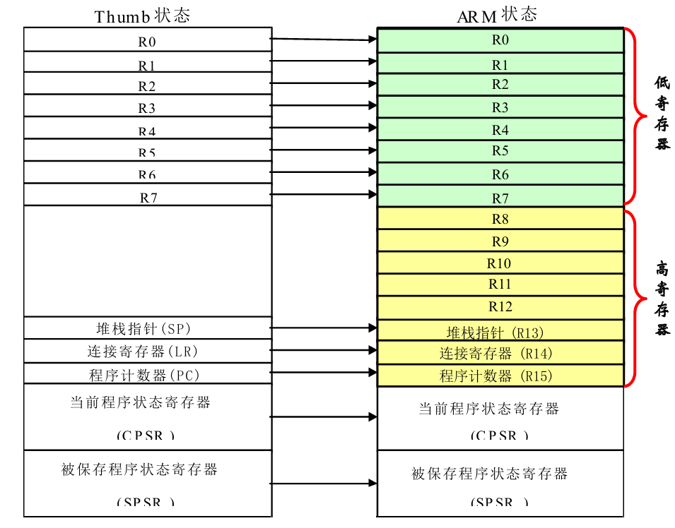
- 若要访问 R8~R12（ARM 状态的通用寄存器），需通过 “特殊指令（如 MOV R8, R0）” 间接访问
- SP/LR 在 “直接访问层面” 看似是 “全局寄存器”，但实际硬件会根据当前模式自动映射到对应模式的专属版本
- Thumb 状态下没有直接访问 SPSR 的指令—— 因为 16 位指令编码空间不足，若要读写 SPSR（如异常处理中恢复 CPSR），需先通过 “BX 指令切换到 ARM 状态”，操作完成后再切回 Thumb 状态。
程序状态寄存器（CPSR/SPSR）
CPSR（当前程序状态寄存器） 和SPSR（保存程序状态寄存器） 两类，核心作用是记录 CPU 的运算状态、控制中断 / 指令集 / 工作模式
- CPSR：当前程序状态寄存器，可以在任何工作模式下被访问。
- SPSR：保持程序状态寄存器，只有在异常模式下，才能被访问
- 状态标志：5个，N符号位，Z零标志，C进位，V溢出位，QDSP运算溢出位。
- 控制标志：4个，I中断允许，F快速中断允许，T状态选择，M[4:0] 处理器工作模式
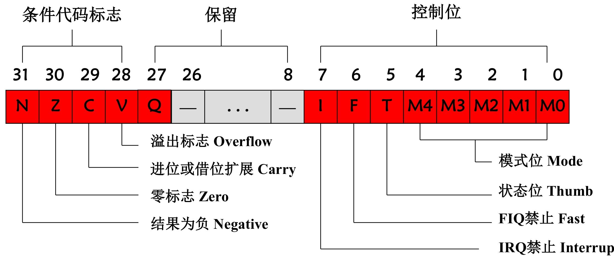
条件代码标志位（bit31~28 + bit27=Q）：运算结果的 “状态记录器”
这类标志位由 CPU自动更新（运算指令执行后），是 “条件执行指令”（如 BEQ、BNE）的判断依据，核心含义如下：
- 核心 4 标志（N/Z/C/V）
| 标志 | 位 | 含义解读（通俗 + 技术） |
|---|---|---|
| N | 31 | 符号位：✅ N=1：运算结果最高位 = 1（有符号数为负）；✅ N=0：运算结果最高位 = 0（正 / 零）；例：16 进制 0x80000000（二进制最高位 1）→ N=1；0x00000001 → N=0 |
| Z | 30 | 零标志：✅ Z=1：运算结果 = 0（如 1-1、0×5）；✅ Z=0：运算结果≠0；例：CMP R0, #0 → 若 R0=0 则 Z=1，触发 BEQ（相等则跳转） |
| C | 29 | 进位 / 借位标志（无符号数运算）：✅ 加法 / CMN：C=1 = 有进位（如 0xFFFFFFFF+1=0x100000000，超出 32 位，进位 1）；C=0 = 无进位；✅ 减法 / CMP：C=1 = 无借位（如 5-3）；C=0 = 有借位（如 3-5）；✅ 移位指令：C = 移出的最后一位（如 MOV R0, R1, LSL #1 → C=R1 的 bit31） |
| V | 28 | 溢出标志（有符号数运算）：✅ V=1 = 溢出（如 0x7FFFFFFF+1=0x80000000，正数变负数，溢出）；✅ V=0 = 无溢出；注：无符号数运算不考虑 V 位 |
扩展标志 Q（bit27）：DSP 运算专属
仅 ARMv5 及以上版本的 E 系列处理器支持；
- Q=1：增强型 DSP 运算（如乘法累加 MAC）发生溢出；
- Q=0：无溢出；
- 特点：Q 位不会自动清零，需手动执行
MSR CPSR_c, #0清除。
控制位（bit7~0）：CPU 的 “操作开关”
这类标志位由程序员手动修改（特权模式下），控制 CPU 的核心行为，核心含义如下：
- 中断禁止位（I/F）：中断的 “总开关”
| 控制位 | 位 | 含义解读 |
|---|---|---|
| I | 7 | IRQ 中断禁止：✅ I=1：关闭 IRQ 中断（所有普通中断如按键、定时器都被屏蔽）；✅ I=0：开启 IRQ 中断； |
| F | 6 | FIQ 中断禁止：✅ F=1：关闭 FIQ 中断（高速外设中断如 DMA 被屏蔽）；✅ F=0：开启 FIQ 中断； |
| 核心规则 | - | 异常触发时，硬件会自动置 I/F=1（禁止中断），避免嵌套异常；处理完异常后需手动清零恢复。 |
- 指令集状态位 T（bit5）：ARM/Thumb 切换
| 处理器版本 | T=0 | T=1 |
|---|---|---|
| ARMv4+ T 系列 | 执行 ARM 指令（32 位） | 执行 Thumb 指令（16 位） |
| ARMv5+ 非 T 系列 | 执行 ARM 指令 | 强制触发 “未定义指令异常”（禁止执行 Thumb） |
| 核心作用 | - | 硬件根据 T 位自动切换指令集解码逻辑，无需手动干预。 |
- 模式位 M [4:0]（bit4~0）：工作模式的 “编码开关”
5 位二进制编码唯一确定 CPU 的 7 种工作模式，对应你给出的编码表（修正后）：
| M [4:0]（二进制） | 工作模式 | 可访问的寄存器（核心） |
|---|---|---|
| 10000（16） | 用户模式 | R0~R14、PC、CPSR（只读） |
| 10001（17） | 快速中断（FIQ） | R0~R7、R8_fiq~R14_fiq、PC、CPSR、SPSR_fiq |
| 10010（18） | 外部中断（IRQ） | R0~R12、R13_irq~R14_irq、PC、CPSR、SPSR_irq |
| 10011（19） | 管理模式 | R0~R12、R13_svc~R14_svc、PC、CPSR、SPSR_svc |
| 10111（23） | 中止模式 | R0~R12、R13_abt~R14_abt、PC、CPSR、SPSR_abt |
| 11011（27） | 未定义模式 | R0~R12、R13_und~R14_und、PC、CPSR、SPSR_und |
| 11111（31） | 系统模式 | R0~R14、PC、CPSR（特权，无 SPSR） |
ARM 异常(Exceptions)
ARM 的异常是处理器对 “内部错误 / 外部请求” 的标准化响应机制 —— 核心是 “暂停当前任务→处理特定事件→恢复原程序”
- 异常：处理器由于外部或内部的原因，停止执行当前任务，转而处理特定的事件，处理完后返回原程序，继续执行。
- 因为需要返回断点，所以处理器处理异常前，会自动保存当前执行状态
- 把 “当前要执行的下一条指令地址” 存入链接寄存器 LR；
- 把 “当前 CPU 状态（模式、中断开关、标志位）” 存入对应异常模式的 SPSR
- 处理器允许多个异常同时发生，它们将会按固定的优先级进行处理。
[!note]
- 中断：仅指 “外部设备发起的请求”（如按键、定时器中断），是异常的 “子集”；
- 异常：包含两类事件，范围更广：
- 外部事件（即中断）：外部设备主动请求处理器处理（如 IRQ/FIQ）；
- 内部事件：处理器执行过程中自身触发的问题（如未定义指令、内存访问错误、软件主动调用系统服务）。
维度 异常（Exception） 中断（Interrupt） 事件来源 外部设备（中断）+ 内部错误 / 请求 仅外部设备 关系 中断是异常的子集 属于异常的一种特殊类型 典型场景 复位、未定义指令、内存错误、SWI 软件调用、IRQ/FIQ 按键、定时器、串口数据接收
ARM 体系结构 7 种异常类型
ARM共有7种类型的异常，不同类型的异常将导致处理器进入不同的工作模式，并执行不同特定地址的指令。
- 任何异常触发时，处理器都会自动完成 3 件事 —— 切换到对应工作模式、PC 跳转到 “特定地址（低端 / 高端）”、按优先级排队处理（高优先级先执行）；
- 优先级规则：数字越小优先级越高（复位最高，未定义指令 / SWI 最低），同优先级异常同时发生时，按 “地址从小到大” 执行。
| 异常类型 | 工作模式 | 低端地址 | 高端地址 | 优先级 | 核心触发条件 | 核心行为 / 用途 |
|---|---|---|---|---|---|---|
| 复位 | 管理模式（svc） | 0x00000000 | 0xFFFF0000 | 1 | nRESET 信号从低变高（硬件复位） | 系统开机 / 重启，初始化核心硬件 |
| 未定义指令 | 未定义指令模式（und） | 0x00000004 | 0xFFFF0004 | 6 | 执行 CPU 不识别 / 未实现的指令 | 软件仿真硬件（如浮点协处理器）、报错非法指令 |
| 软件中断（SWI） | 管理模式（svc） | 0x00000008 | 0xFFFF0008 | 6 | 用户模式执行 SWI 指令 | 用户程序调用内核特权操作（如读文件、配置硬件） |
| 指令预取中止 | 中止模式（abt） | 0x0000000C | 0xFFFF000C | 5 | 预取指令的地址不存在 / 无访问权限 | 虚拟内存管理、拦截非法指令访问 |
| 数据访问中止 | 中止模式（abt） | 0x00000010 | 0xFFFF0010 | 2 | 读写数据的地址不存在 / 无访问权限 | 内存保护、拦截非法数据访问（优先级仅低于复位） |
| 外部中断请求（IRQ） | 外部中断模式（irq） | 0x00000018 | 0xFFFF0018 | 4 | IRQ 引脚有效 + CPSR 的 I 位 = 0（允许 IRQ） | 处理通用外设中断（按键、定时器、串口） |
| 快速中断请求（FIQ） | 快速中断模式（fiq） | 0x0000001C | 0xFFFF001C | 3 | FIQ 引脚有效 + CPSR 的 F 位 = 0（允许 FIQ） | 处理高速外设中断（DMA、网卡、摄像头） |
1. 复位异常（优先级 1，最高）
- 触发场景：芯片开机、按复位键（nRESET 信号低→高）；
- 核心操作（硬件自动执行）
- 强制 CPSR 的 M [4:0]=b10011（切管理模式）；
- 置位 CPSR 的 I/F 位（禁止 IRQ/FIQ 中断，避免初始化时被打断）；
- 清零 CPSR 的 T 位（切 ARM 状态，禁止 Thumb）；
- PC 跳转到 0x00000000（低端）/0xFFFF0000（高端）执行初始化代码；
- 复位异常时，处理器立即停止当前程序，进入禁止中断的管理模式。从地址0x00000000处开始执行。
- 相当于电脑开机，处理器先进入 “系统管理员模式”，关闭所有中断，从固定地址启动，完成硬件初始化。
2. 未定义指令异常（优先级 6）
- 触发场景：程序执行了 CPU 不支持的指令（如 ARM7 执行 ARM9 专属指令、自定义非法指令）；
- 核心行为：自动切未定义指令模式，PC 跳转到 0x00000004 执行处理程序；
- 典型用途：软件模拟硬件（比如 CPU 无浮点运算单元，用该异常模拟浮点指令），或提示 “程序非法” 并终止运行。
3. 软件中断（SWI）（优先级 6）
- 核心价值：用户模式（低权限）无法直接操作硬件，需通过 SWI 触发异常进入管理模式（高权限），调用内核功能；
- 举例：APP 要读取 SD 卡数据→执行
SWI 0x12（带参数的 SWI 指令）→触发异常→管理模式下内核执行读 SD 卡操作→完成后返回用户模式； - 注意：和未定义指令同优先级，同时发生时先执行未定义指令（地址更小）。
4. 指令预取中止（优先级 5）
- 关键特点：“预取时检测异常，但执行时才触发”——CPU 会提前预取后续指令，若预取的地址无效 / 无权限，不会立即触发异常，等这条指令要执行时才触发；
- 典型场景：程序跳转到不存在的地址（如 0xFFFFFFF0），预取指令时内存控制器发中止信号，执行该指令时触发异常。
5. 数据访问中止（优先级 2，仅低于复位）
- 触发时机：执行读 / 写数据指令时（如
LDR R0, [R1]、STR R2, [R3]），地址不存在 / 无权限； - 优先级高的原因：数据访问错误会直接破坏系统内存，需优先处理（比如 APP 写内核内存，立即触发该异常拦截）；
- 举例：用户模式程序写 0x80000000（内核专属地址）→触发数据访问中止→中止模式下执行错误处理，终止该程序。
6. 外部中断请求（IRQ）（优先级 4）
- 触发条件：外设（如按键）拉低 IRQ 引脚 + CPSR 的 I 位 = 0（未禁止 IRQ）；
- 注意：异常触发时，硬件会自动置位 I 位（禁止后续 IRQ），处理完中断后需手动清零 I 位恢复。
7. 快速中断请求（FIQ）（优先级 3）
- 触发条件：高速外设（如 DMA）拉低 FIQ 引脚 + CPSR 的 F 位 = 0（未禁止 FIQ）；
- 典型场景：摄像头实时传数据、网卡接收高速数据包、工业控制的毫秒级响应。
复位（1）> 数据访问中止（2）>FIQ（3）>IRQ（4）> 指令预取中止（5）> 未定义指令 / SWI（6）；同优先级（如未定义指令和 SWI）按地址从小到大执行
异常的响应及返回
ARM 异常的 “响应 - 返回” 是保证程序中断后能精准恢复执行的核心机制，核心逻辑是 “响应时保存状态、返回时修正地址 + 恢复状态”
异常的响应
- 保存返回地址到对应模式的 LR（R14_x）
- ARM 状态进入异常：LR 中保存 “下一条指令的地址”（本质是当前
PC - 4，PC 因流水线超前性，实际指向当前指令后 2 条，减 4 后精准指向断点）； - Thumb 状态进入异常：LR 中保存 “当前 PC 的偏移量”（无需区分 ARM/Thumb，返回时硬件自动适配）；
- ARM 状态进入异常：LR 中保存 “下一条指令的地址”（本质是当前
- 备份 CPSR 到对应模式的 SPSR
- 强制切换到异常专属工作模式：硬件自动修改 CPSR 的 M [4:0] 位（模式位），切换到对应异常模式
- 跳转到异常向量地址 + 禁止中断
若异常发生时处理器处于 Thumb 状态，PC 加载向量地址后会自动切换到 ARM 状态
异常的返回
异常处理完成后，需执行 3 步操作恢复原程序，核心是 “修正 LR 地址→恢复 CPSR→开启中断”：
- LR 减去偏移量写入 PC
- SPSR 复制回 CPSR
- 清除中断禁止位（可选）
[!tip]
异常处理时保存在R14中值，即异常返回执行的指令地址
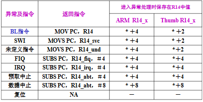
（1）BL 子程序调用：LR 已自动修正
- 举例：BL 指令在 0x8000（*=0x8000），PC 因流水线指向 0x8008（第 3 条指令）；
- 硬件自动将 LR=0x8008-4=0x8004（下一条指令地址），返回时
MOV PC, LR直接回到 0x8004，无需偏移。（2）SWI / 未定义指令：LR 指向断点，无需偏移
- 这类异常由 “当前执行的指令” 触发（如执行
SWI 0x12），PC 还未更新（指向当前指令后 2 条）；- 硬件保存 LR=PC-4=“当前指令的下一条指令地址”（断点），返回时
MOVS PC, LR直接恢复，“S” 后缀自动把 SPSR 写回 CPSR。（3）FIQ/IRQ：需减 4 修正流水线偏移
- IRQ/FIQ 在 “当前指令执行完” 触发，PC 已更新（指向当前指令后 3 条）；
- 硬件保存 LR=PC-4=“当前指令后 2 条地址”（超前 4 字节），返回时
SUBS PC, LR, #4减 4，回到 “当前指令的下一条”（断点）。（4）指令预取中止：减 4 回到错误指令
- 异常由 “预取的指令地址无效” 触发，需回到 “有问题的指令” 重新执行；
- LR 保存的是 “错误指令的下一条地址”，减 4 后回到错误指令，重新尝试取指。
（5）数据访问中止：减 8 回到错误数据指令
- 异常由 “读写数据指令” 触发，PC 已更新到 “当前指令后 3 条”，LR 保存的是 “当前指令后 2 条地址”；
- 减 8 后回到 “数据访问指令本身”，重新尝试访问数据。
应用程序中的异常处理
应用程序中 ARM 异常处理的核心是 “提前预埋跳转指令 + 硬件自动响应 + 软件恢复执行” —— 通过在固定的异常向量表中放跳转指令，让异常发生时能精准跳转到处理程序，处理完后回到原程序，全程保证系统不陷入未知状态。
- 异常的不可预测性：系统运行时，IRQ/FIQ、内存错误、软件中断等异常可能随时发生（比如用户按按键触发 IRQ），必须提前做好 “兜底方案”；
- 避免未知状态：若异常发生后处理器找不到处理程序，会执行乱码指令，导致系统崩溃；因此核心思路是 “异常向量表预埋跳转指令”—— 把所有异常的 “入口地址”（向量地址）绑定到对应的处理程序；
- 固定执行逻辑：异常触发→PC 强制跳转到向量地址→执行跳转指令到处理程序→处理完成→返回原程序，全程硬件 + 软件配合，无人工干预。
IRQ 中断处理完整流程
进入异常（硬件自动完成，无需写代码）
程序 A 在系统模式运行，处理器状态为「Thumb 状态、I 位 = 0（允许 IRQ）」。
- 置位 CPSR 的 I 位和 T 位，禁止中断同时进入ARM状态
- 修改 CPSR 的 MOD 位（M [4:0]=10010），切换到IRQ模式
- 保存返回地址到 LR_irq
- 备份 CPSR 到 SPSR_irq
- PC 跳转到 IRQ 向量地址（0x00000018）
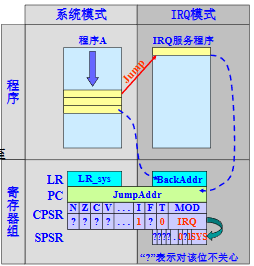
执行 IRQ 处理程序（软件编写，核心是 “通用处理 + 专属逻辑”）
- 异常向量表是 “固定地址 + 固定跳转指令” 的集合，ROM（Flash）中固化以下代码；
- 根据向量表读取真正中断服务程序地址，然后跳转后用户执行编写的异常处理程序
退出异常（软件编写，恢复原程序执行）
- 将SPSR寄存器的值复制回CPSR寄存器
- 回到用户程序的断点
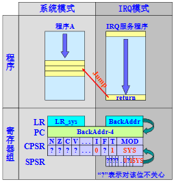
Bootloader 外部中断（IRQ）处理实例
异常向量表（Flash 中 0x00000000 起始）—— 中断的 “入口导航栏”
b SYS_RST_HANDLER ; 0x00000000 复位异常 → 跳转到复位处理程序 b UDF_INS_HANDLER ; 0x00000004 未定义指令异常 → 跳转到对应处理程序 b SWI_SVC_HANDLER ; 0x00000008 软件中断 → 跳转到对应处理程序 b INS_ABT_HANDLER ; 0x0000000C 指令预取中止 → 跳转到对应处理程序 b DAT_ABT_HANDLER ; 0x00000010 数据访问中止 → 跳转到对应处理程序 b ; 0x00000014 保留（空指令，无异常绑定） b IRQ_SVC_HANDLER ; 0x00000018 IRQ外部中断 → 跳转到IRQ通用处理程序 【核心】 b FIQ_SVC_HANDLER ; 0x0000001C FIQ快速中断 → 跳转到FIQ处理程序外部中断触发后的硬件动作
- 处理器自动保存状态：把 “被中断程序的下一条指令地址” 存入 IRQ 模式的 LR（R14_irq），把当前 CPSR（状态寄存器）复制到 IRQ 模式的 SPSR_irq；
- 自动切换到 IRQ 模式：使用 IRQ 专属的栈指针（R13_irq）和 LR，避免覆盖用户程序的寄存器；
- 强制 PC 跳转到 0x00000018：执行该地址的
b IRQ_SVC_HANDLER指令，跳转到通用处理程序；
IRQ 通用处理程序（IRQ_SVC_HANDLER）—— 中断的 “中间处理层”
IRQ_SVC_HANDLER: sub lr, lr, #4 ; 步骤1：修正IRQ模式LR的返回地址 stmfd sp!, {r0-r3, lr} ; 步骤2：保护通用寄存器和修正后的LR ldr r0, =IRQ_SVC_Vector ; 步骤3：加载RAM中IRQ向量的地址到R0 ldr pc, [r0] ; 步骤4：跳转到RAM中存放的真正中断服务程序
中断向量地址分配与配置 —— 中断的 “动态绑定层”
; 第一部分：为中断向量分配RAM地址空间
MAP _ISR_STARTADDRESS ; 定义内存表的起始地址（_ISR_STARTADDRESS是RAM起始地址）
SYS_RST_VECTOR #4 ; 复位向量，占4字节（RAM地址）
UDF_INS_VECTOR #4 ; 未定义指令向量，占4字节
SWI_SVC_VECTOR #4 ; 软件中断向量，占4字节
INS_ABT_VECTOR #4 ; 指令预取中止向量，占4字节
DAT_ABT_VECTOR #4 ; 数据访问中止向量，占4字节
RESERVED_VECTOR #4 ; 保留向量，占4字节
IRQ_SVC_VECTOR #4 ; IRQ向量，占4字节 【核心】
FIQ_SVC_VECTOR #4 ; FIQ向量，占4字节
; 第二部分：绑定IRQ服务程序到IRQ_SVC_VECTOR
ldr r0, =IRQ_SVC_VECTOR ; R0 = IRQ_SVC_VECTOR的RAM地址
ldr r1, =IsrIRQ ; R1 = 真正的IRQ服务程序（IsrIRQ）的入口地址
str r1, [r0] ; 把IsrIRQ的地址写入IRQ_SVC_VECTOR对应的RAM单元
[!note]
- 硬件触发 IRQ：外部设备（如按键）触发 IRQ 中断，处理器自动保存状态→切 IRQ 模式→PC 跳转到 0x00000018；
- 执行向量表跳转：0x00000018 处的
b IRQ_SVC_HANDLER指令，把 PC 跳转到 IRQ 通用处理程序；- 通用处理程序操作
- 修正 LR（减 4）→ 压栈保护 R0~R3 和 LR → 加载 RAM 中
IRQ_SVC_VECTOR的地址到 R0；- 读取
IRQ_SVC_VECTOR中存放的 IsrIRQ 地址，写入 PC，跳转到真正的中断服务程序；- 执行具体中断逻辑：IsrIRQ 处理按键 / 定时器等具体业务（如读取按键状态、清中断标志）；
- 返回原程序：处理完成后，执行
ldmfd sp!, {r0-r3, pc}^（出栈恢复 R0~R3，把修正后的 LR 写入 PC，^恢复 SPSR 到 CPSR），回到被中断的程序继续执行。